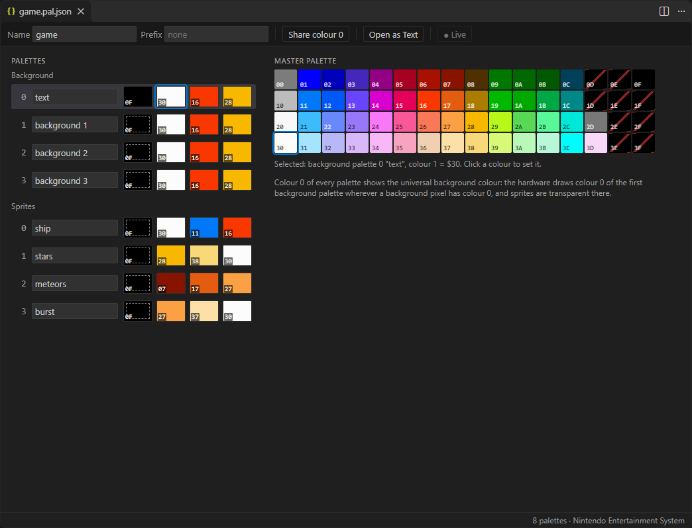
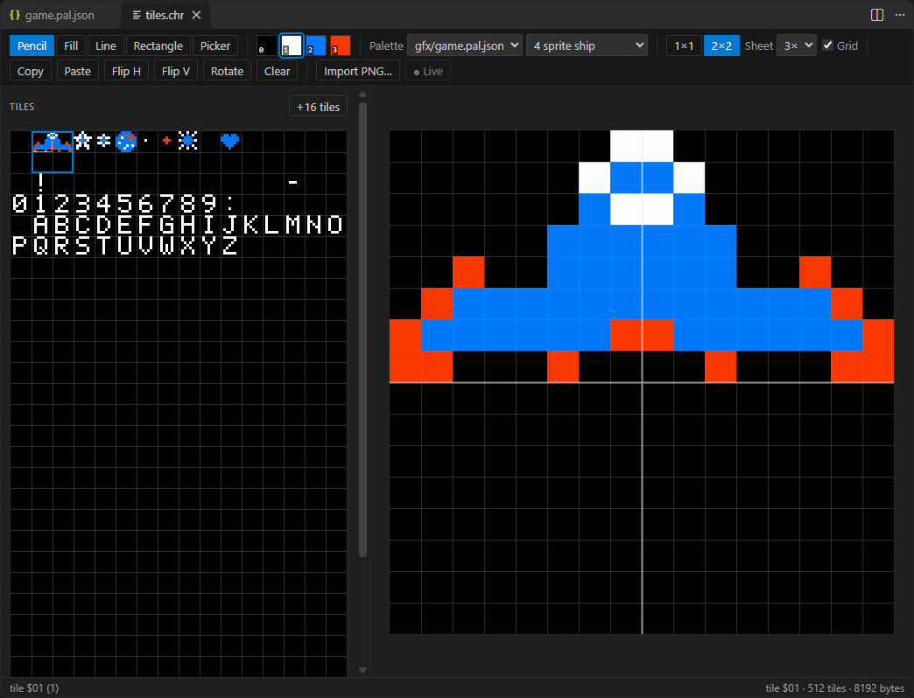
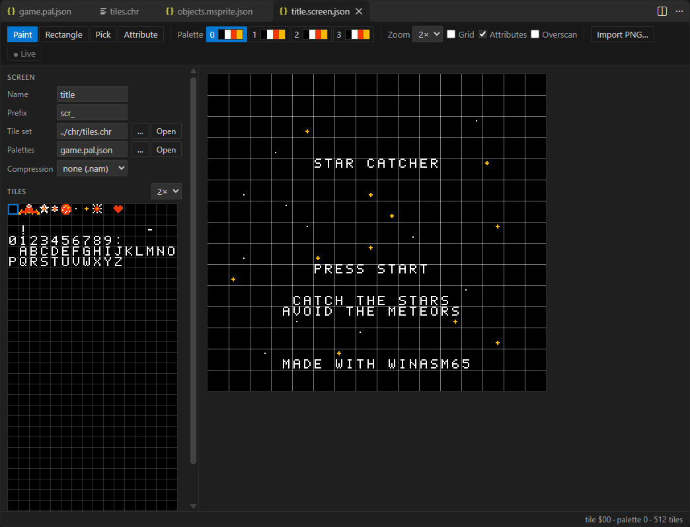
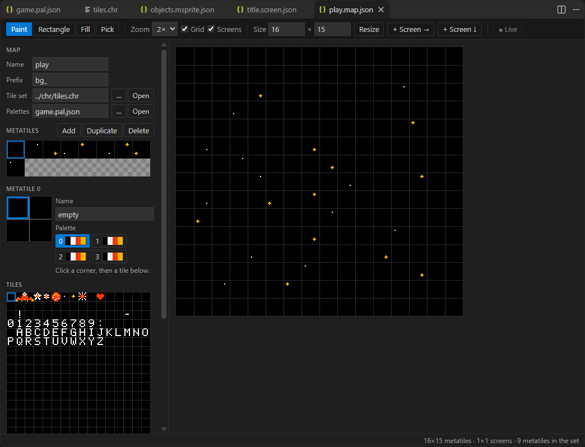
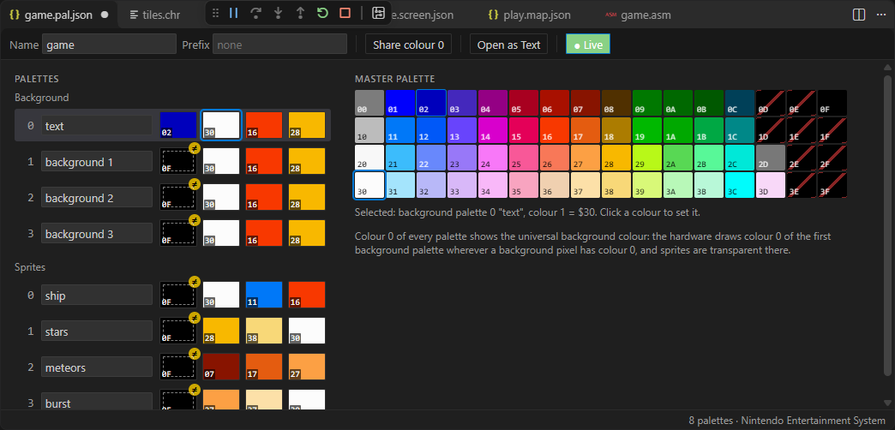
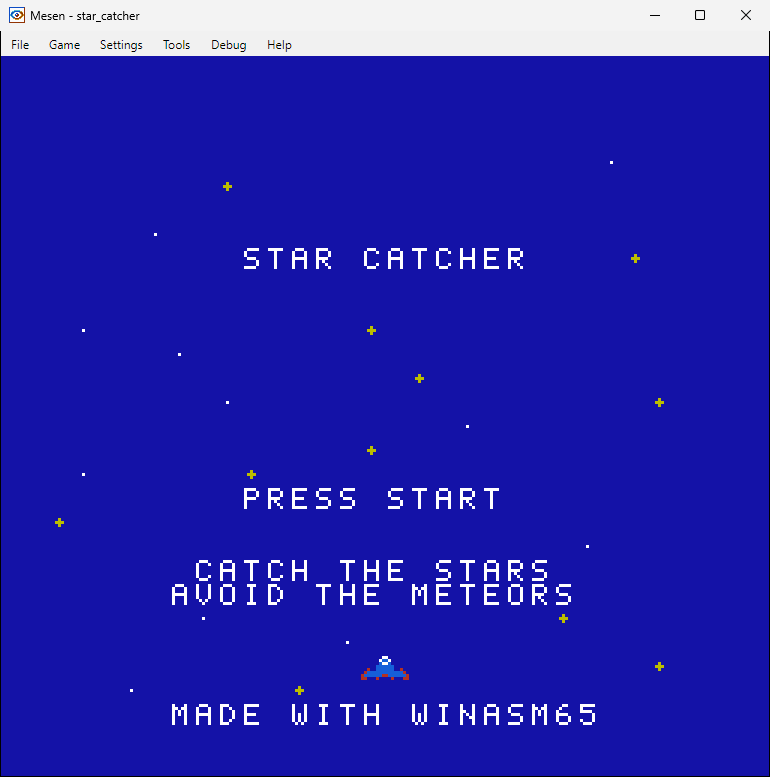

Graphics Designer
The WinASM65 Graphics Designer is a second VS Code extension that draws a game's graphics where its code is written: tile sets, palettes, screens, metatile maps, metasprites and their animations. Every asset is exported as assembly sources and binary files the assembler includes, a picture of an asset shows when hovering its labels in the code, and edits can be written into the running game. The NES is the system implemented today; the asset model and the editors are driven by a description of the system that the designer program returns.
The pieces
Three parts, each usable without the next:
- WinASM65.Graphics, a .NET library with no reference to the assembler: the asset files, the graphics of each system (
IGraphicsSystem;NesGraphicstoday), the exporter, a renderer to PNG and a PNG importer. - WinASM65.Designer, its program.
WinASM65.Designer export gfxexports every asset of a folder,renderdraws one to a PNG,importturns a picture into assets,systemsdescribes the systems. With--serverit answers JSON-RPC on its standard input and output (describe,load,validate,format,export,render,import). - The extension “WinASM65 Graphics Designer” (
codewinbzn.winasm65-graphics), which depends on the WinASM65 extension for thewinasm65language and debugger. It opens each asset in its own editor, runs the designer server, exports on save, adds the hover pictures and the live preview.
The same operations are tools of the MCP server (render_asset, edit_tiles, import_png, export_assets…), so an AI assistant can draw with them too.
Assets
An asset is a file of the project, committed with the code. JSON assets carry "version": 1 and "system": "nes", and name the files they draw with by relative path:
| File | Editor | Holds |
|---|---|---|
*.chr | Tile Set | The tiles, in the system's own encoding (NES: 16 bytes a tile, 2 bit planes). A binary file, included as it is. |
*.pal.json | Palettes | 4 background and 4 sprite palettes of 4 colours of the master palette, with names. |
*.screen.json | Screen | A 32×30 tile screen and its attributes (a palette per 16×16 block); compression none or rle. |
*.map.json | Map | Metatiles (2×2 tiles and a palette) and a map of them, any number of screens wide and high. |
*.msprite.json | Metasprites | Groups of hardware sprites around an origin, and animations of them. |
JSON assets stay text: every edit goes through VS Code's undo, dirty state, save and diff, and Open as Text shows the JSON. The screen, map and metasprite editors draw with the tile set and palettes their asset names; an unsaved edit in an open tile editor shows in them at once.
The editors
Pictures of the example game, Star Catcher, whose graphics are these assets.
Palettes


$0D, which some televisions take for a sync signal, are crossed out.Tile Set


Metasprites and animations
Screens


Maps


Export and build
An asset is exported when it is saved (setting winasm65Graphics.exportOnSave), with Export Asset, or Export All Assets in Folder; without VS Code, WinASM65.Designer export gfx does the same. The files are written next to the asset and included by the game like any source; problems go to the Problems panel, on the line of the value at fault. Labels are the asset's prefix followed by the name in lower snake case, constants are upper case.
| Asset | Writes | Defines |
|---|---|---|
game.pal.json | game.pal.bin (32 bytes of palette RAM), game.pal.asm | palettes: 8 rows of 4 bytes; PAL_<NAME>, the index of each palette |
title.screen.json | title.nam (960 tiles, 64 attributes) or title.rle, title.screen.asm | title: .incbin "title.nam"; TITLE_SIZE |
play.map.json | play.map.asm | metatile_tl/tr/bl/br, metatile_pal, play_map (a row per map row); PLAY_WIDTH, PLAY_HEIGHT, METATILE_COUNT |
objects.msprite.json | objects.msprite.asm | per metasprite name: rows .byte dy, tile, attributes, dx ended by $80; metasprites_lo/_hi; MS_<NAME>; per animation name_anim: rows .byte metasprite, duration ended by .byte $FF, loop |
In Star Catcher, with the prefixes spr_, scr_ and bg_, the game draws the ship with:
.include "../gfx/game.pal.asm"
.include "../gfx/objects.msprite.asm"
...
@show: lda #SPR_MS_SHIP ; the metasprite's number
jmp draw_metasprite ; through spr_metasprites_lo/hiThe exports are committed, so the game builds with the assembler alone, and a test checks they are what an export of the assets gives today: an asset edited without exporting would build a game that does not match its sources.
Pictures on hover

.incbin of a tile set, a screen or palettes, or an .include of an exported source, shows its asset too.Live preview
While a WinASM65 debug session runs, the ● Live button of the tile, palette and screen editors writes each edit into the running machine, through the debugger's winasm65.memory.write request and the memory spaces of the bridge: tiles into CHR, palettes into PAL, a screen into the first nametable of PPU. Turning it on writes the whole asset once, then only the bytes that change. The game may write over them (a screen drawn again, palettes loaded again); metasprites and maps have no live preview, since the game builds them from its own tables every frame.


$0F to $02…

An emulator whose bridge cannot write a space (MesenCE's, contract 1) is reported by the editor when Live is turned on.
Import PNG
WinASM65 Graphics: Import PNG… (Command Palette, the Explorer's menu on a .png, or the button of the tile and screen editors) turns a picture into assets, within the system's limits:
- Background: tiles, palettes and a screen, from a picture of at most 256×240 pixels. The most frequent colour becomes the shared colour 0, each 16×16 block keeps its three most frequent other colours, and the blocks are grouped into four palettes.
- Sprites: tiles, palettes and a metasprite file. Colour 0 is transparent, each tile gets a palette, and flipped copies of a tile are reused.
The tiles go to a new tile set or are appended to an existing one, reusing the tiles already there. What had to be merged (colours, blocks that did not fit a palette) is reported.
Other systems
The editors draw from the system description the designer server returns (describe): tile size and encoding, colours per tile, the master palette, palettes and their layout, the sprite limits, the screen size and attribute blocks. A system is added in WinASM65.Graphics by implementing IGraphicsSystem and its exporters; the extension needs no NES-specific change for it. Only the NES is implemented today.
Settings and commands
| Setting | Default | |
|---|---|---|
winasm65Graphics.designerPath | empty | The WinASM65.Designer executable (or .dll, run with dotnet); empty: the copy shipped with the extension. |
winasm65Graphics.exportOnSave | true | Export an asset when it is saved, and report its problems. |
winasm65Graphics.hoverPictures | true | Pictures when hovering exported labels and .incbin/.include lines. |
Commands, under WinASM65 Graphics: New Palette…, New Tile Set…, New Screen…, New Map…, New Metasprites… (also in the Explorer's menu on a folder), Export Asset, Export All Assets in Folder, Import PNG….
The screenshots of this page are taken by node tools/screenshots/shoot-designer.mjs, which also checks the live preview against Mesen2 when it is installed.